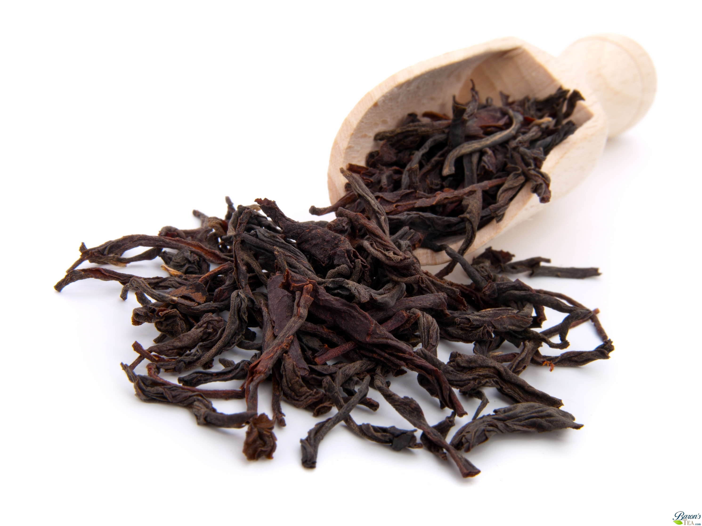

Black Tea
Black tea is the most oxidized tea at 90-95% oxidation, giving it a very strong flavour. it is named black tea because of the colour of the tea leaves, although it is also commonly known as red tea in china, referring to the colour of the liquid. Although green tea has recently seen a revival due to its purported health benefits, black tea still accounts for over ninety percent of all tea sold in the West.
